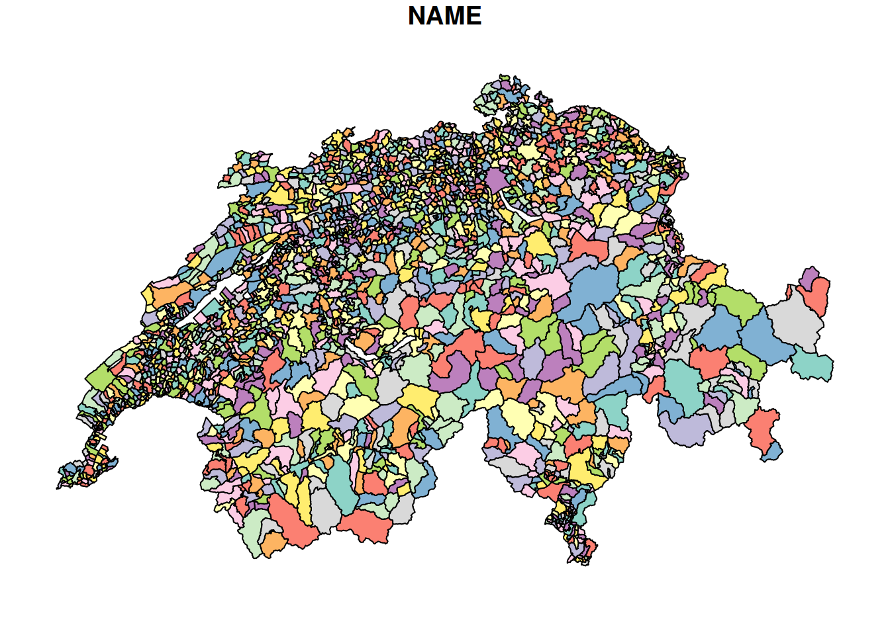
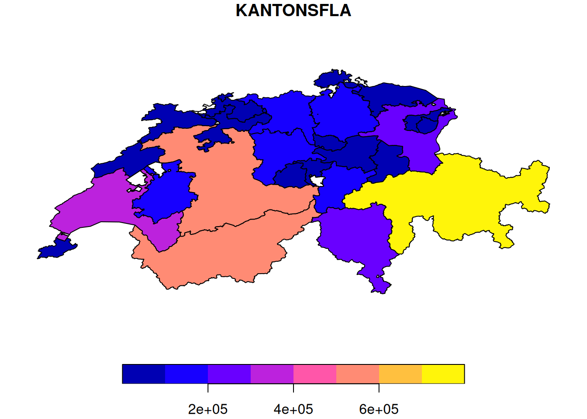
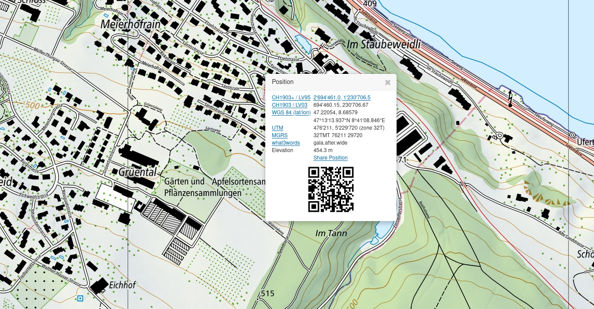
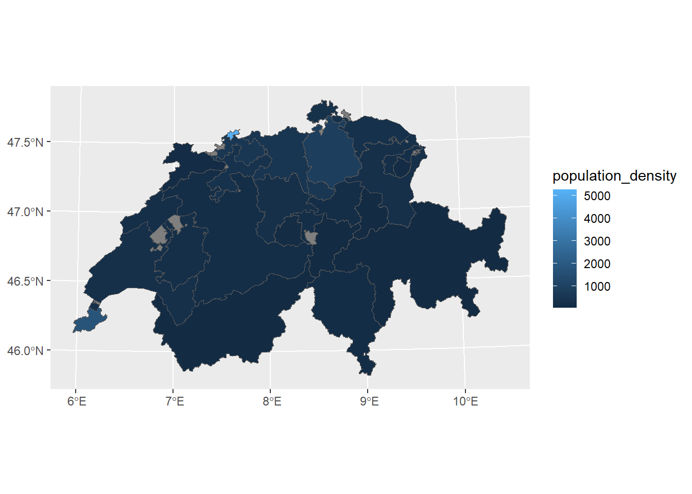
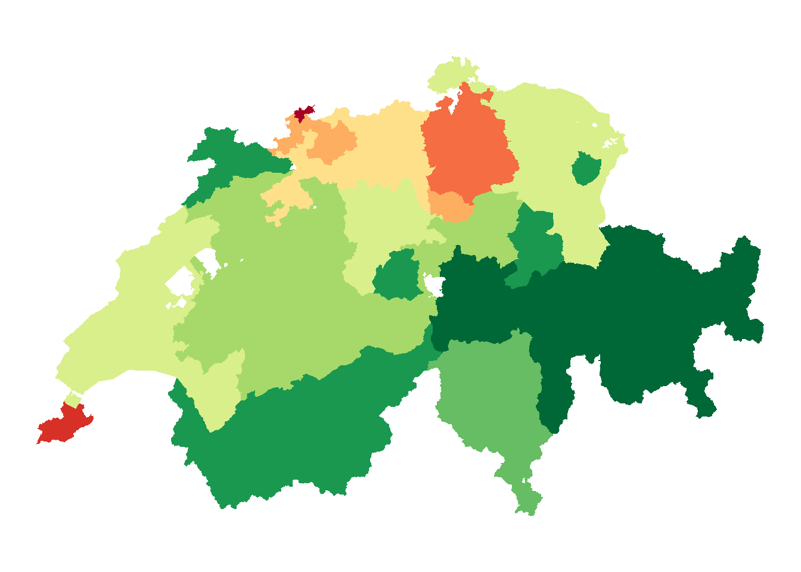
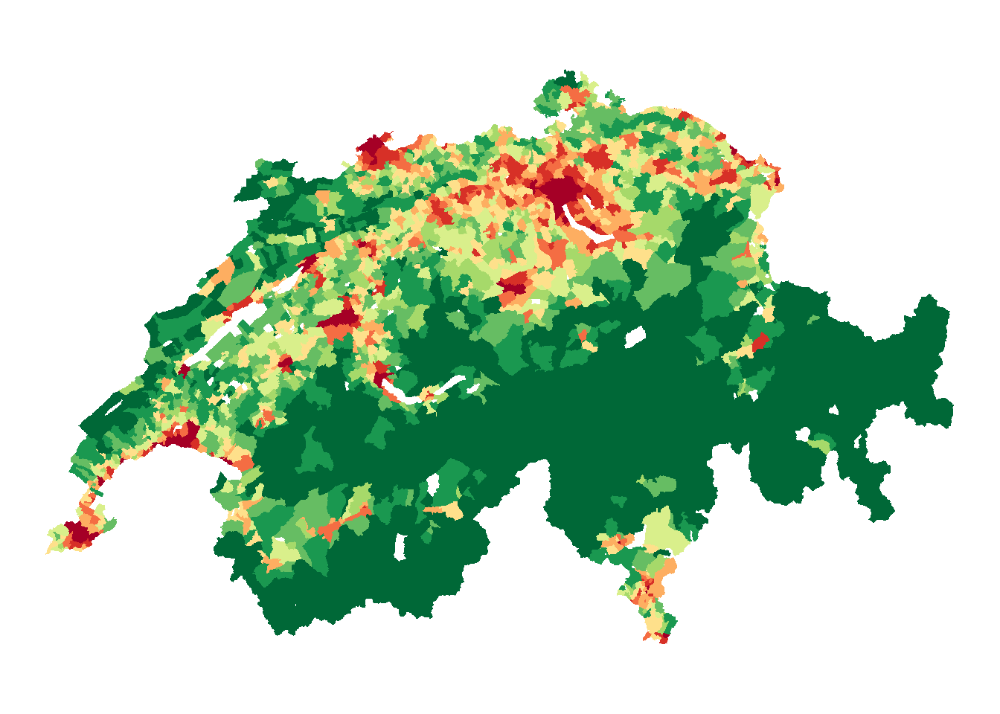

library("sf")
cantons <- read_sf("datasets/rauman/kantone.gpkg")
municipalities <- read_sf("datasets/rauman/gemeinden.gpkg")SpatAn 1: Exercise A
You can download the datasets for the exercises from Moodle-
Task 1: Import vector data
Import the kantone.gpkg and gemeinden.gpkg records as follows. These are geodatasets in the geopackage (\* .gpkg) format.
Look at the imported records in your terminal (see Note 19.1).
Note 19.1
You will get the most information about sf objects if you look at the record in the console (by typing the variable name in the console). When using the RStudio Viewer, sf objects load very slowly and metadata is not displayed.
Task 2: Visualise data
A very simple way of visualising sf objects is to use the plot() function in base-R. Execute the specified R commands and study the resulting plots. What differences can you see? How do you explain these differences?
# without max.plot = 1 will result in R per plot per column
plot(municipalities, max.plot = 1)
# Alternatively, you can also plot a specific column
plot(cantons["KANTONSFLA"])
Input: Coordinate systems
In the above visualisation, the following is noticeable:
- the X/Y axes have two very different number ranges (see the axis labels)
- the outline of Switzerland looks different in the two datasets (
cantonsare compressed againstmunicipalities)
Of course, this has to do with the fact that the two data sets were recorded in different coordinate systems. Coordinate systems are abbreviated to CRS (Coordinate Reference System). The assigned coordinate systems can be queried with st_crs().
st_crs(cantons)
## Coordinate Reference System:
## User input: Undefined Cartesian SRS
## wkt:
## ENGCRS["Undefined Cartesian SRS",
## EDATUM["Unknown engineering datum"],
## CS[Cartesian,2],
## AXIS["(E)",east,
## ORDER[1],
## LENGTHUNIT["Meter",1]],
## AXIS["(N)",north,
## ORDER[2],
## LENGTHUNIT["Meter",1]]]
st_crs(municipalities)
## Coordinate Reference System:
## User input: Undefined Cartesian SRS
## wkt:
## ENGCRS["Undefined Cartesian SRS",
## EDATUM["Unknown engineering datum"],
## CS[Cartesian,2],
## AXIS["(E)",east,
## ORDER[1],
## LENGTHUNIT["Meter",1]],
## AXIS["(N)",north,
## ORDER[2],
## LENGTHUNIT["Meter",1]]]Unfortunately, no coordinate systems are assigned in our case. With a little experience, however, you can guess which coordinate system is used, because a lot of them can be ruled out. The three most common coordinate systems in Switzerland are as follows:
CH1903 LV03: the old coordinate system of SwitzerlandCH1903+ LV95: the new coordinate system of SwitzerlandWGS84: a frequently used, global geodetic coordinate system, i.e., the coordinates are given in length and width (lat/lon).
It is important to determine the correct coordinate system on the basis of the coordinates shown in the geometry column. If you select a location by right clicking on map.geo.admin.ch, you can find the coordinates of this location in various coordinate reference systems (see Figure 19.1).

If you compare these coordinates with the coordinates of our data sets, it quickly becomes clear that the cantons dataset is the coordinate reference system (CRS) WGS84. We can use this information to set the CRS of our dataset with st_set_crs().
# Assign with st_set_crs()...
cantons <- st_set_crs(cantons, "WGS84")If we now retrieve the CRS information, we should see that this task has been successfully completed.
# ... query with st_crs()
st_crs(cantons)
## Coordinate Reference System:
## User input: WGS84
## wkt:
## GEOGCRS["WGS 84",
## DATUM["World Geodetic System 1984",
## ELLIPSOID["WGS 84",6378137,298.257223563,
## LENGTHUNIT["metre",1]]],
## PRIMEM["Greenwich",0,
## ANGLEUNIT["degree",0.0174532925199433]],
## CS[ellipsoidal,2],
## AXIS["geodetic latitude (Lat)",north,
## ORDER[1],
## ANGLEUNIT["degree",0.0174532925199433]],
## AXIS["geodetic longitude (Lon)",east,
## ORDER[2],
## ANGLEUNIT["degree",0.0174532925199433]],
## ID["EPSG",4326]]It is a bit more complicated if we want to set the CRS of the municipalities dataset. In comparison with map.geo.admin.ch, we can see that this must be the CRS CH1903+ LV95. Using this name for our CRS assignment won’t work:
# Assign with st_set_crs()...
municipalities <- st_set_crs(municipalities, "CH1903+ LV95")
# ... query with st_crs()
st_crs(municipalities)The advertised names of these CRS are prone to errors. Therefore, it is better to work with the respective EPSG codes of the reference systems. These EPSG codes can be found on the following website: epsg.io/map. It is worth noting the EPSG codes of the relevant CRS:
- CH1903 LV03:
EPSG:21781 - CH1903+ LV95:
EPSG:2056 - WGS84:
EPSG:4326
We can use this code to set the CRS of the municipalities dataset:
# Assign with st_set_crs()...
municipalities <- st_set_crs(municipalities, 2056)
# ... query with st_crs()
st_crs(municipalities)
## Coordinate Reference System:
## User input: EPSG:2056
## wkt:
## PROJCRS["CH1903+ / LV95",
## BASEGEOGCRS["CH1903+",
## DATUM["CH1903+",
## ELLIPSOID["Bessel 1841",6377397.155,299.1528128,
## LENGTHUNIT["metre",1]]],
## PRIMEM["Greenwich",0,
## ANGLEUNIT["degree",0.0174532925199433]],
## ID["EPSG",4150]],
## CONVERSION["Swiss Oblique Mercator 1995",
## METHOD["Hotine Oblique Mercator (variant B)",
## ID["EPSG",9815]],
## PARAMETER["Latitude of projection centre",46.9524055555556,
## ANGLEUNIT["degree",0.0174532925199433],
## ID["EPSG",8811]],
## PARAMETER["Longitude of projection centre",7.43958333333333,
## ANGLEUNIT["degree",0.0174532925199433],
## ID["EPSG",8812]],
## PARAMETER["Azimuth of initial line",90,
## ANGLEUNIT["degree",0.0174532925199433],
## ID["EPSG",8813]],
## PARAMETER["Angle from Rectified to Skew Grid",90,
## ANGLEUNIT["degree",0.0174532925199433],
## ID["EPSG",8814]],
## PARAMETER["Scale factor on initial line",1,
## SCALEUNIT["unity",1],
## ID["EPSG",8815]],
## PARAMETER["Easting at projection centre",2600000,
## LENGTHUNIT["metre",1],
## ID["EPSG",8816]],
## PARAMETER["Northing at projection centre",1200000,
## LENGTHUNIT["metre",1],
## ID["EPSG",8817]]],
## CS[Cartesian,2],
## AXIS["(E)",east,
## ORDER[1],
## LENGTHUNIT["metre",1]],
## AXIS["(N)",north,
## ORDER[2],
## LENGTHUNIT["metre",1]],
## USAGE[
## SCOPE["Cadastre, engineering survey, topographic mapping (large and medium scale)."],
## AREA["Liechtenstein; Switzerland."],
## BBOX[45.82,5.96,47.81,10.49]],
## ID["EPSG",2056]]Now that the CRS of the datasets is known, we can use ggplot2 to visualise our data. In InfoVis 1 & 2, we worked intensively with ggplot2 and got to know the geom_point() and geom_line() layers. ggplot() is also able to very easily plot vector data with geom_sf().
Task 3: Transform coordinate systems
In the previous exercise, we assigned a coordinate system but we did not manipulate the existing coordinates (in the geom column). It is quite different to transfer the data from one coordinate system to the other. In the process of transforming the system, the coordinates are converted and thus manipulated. For practical reasons, we will transfer all our data into the new Swiss coordinate system CH1903+ LV95. Transform the cantons record with st_transform() into CH1903+ LV95, using the correct EPSG code.
Before transforming the data (consider the attributes Bounding box, Projected CRS as well as the values in the geomcolumn):
cantons
## Simple feature collection with 51 features and 6 fields
## Geometry type: POLYGON
## Dimension: XY
## Bounding box: xmin: 5.955902 ymin: 45.81796 xmax: 10.49217 ymax: 47.80845
## Geodetic CRS: WGS 84
## # A tibble: 51 × 7
## NAME KANTONSNUM SEE_FLAECH KANTONSFLA KT_TEIL EINWOHNERZ
## * <chr> <int> <dbl> <dbl> <chr> <int>
## 1 Graubünden 18 NA 710530 0 197888
## 2 Bern 2 11897 595952 1 1031126
## 3 Valais 23 1060 522463 0 341463
## 4 Vaud 22 39097 321201 1 793129
## 5 Ticino 21 7147 281216 0 353709
## 6 St. Gallen 17 7720 202820 1 504686
## 7 Zürich 1 6811 172894 0 1504346
## 8 Fribourg 10 7818 167142 1 315074
## 9 Luzern 3 6438 149352 0 406506
## 10 Aargau 19 870 140380 1 670988
## # ℹ 41 more rows
## # ℹ 1 more variable: geom <POLYGON [°]>After transferring the data (consider the Bounding box and Projected CRS attributes as well as the values in the geom column):
cantons
## Simple feature collection with 51 features and 6 fields
## Geometry type: POLYGON
## Dimension: XY
## Bounding box: xmin: 2485410 ymin: 1075268 xmax: 2833858 ymax: 1295934
## Projected CRS: CH1903+ / LV95
## # A tibble: 51 × 7
## NAME KANTONSNUM SEE_FLAECH KANTONSFLA KT_TEIL EINWOHNERZ
## * <chr> <int> <dbl> <dbl> <chr> <int>
## 1 Graubünden 18 NA 710530 0 197888
## 2 Bern 2 11897 595952 1 1031126
## 3 Valais 23 1060 522463 0 341463
## 4 Vaud 22 39097 321201 1 793129
## 5 Ticino 21 7147 281216 0 353709
## 6 St. Gallen 17 7720 202820 1 504686
## 7 Zürich 1 6811 172894 0 1504346
## 8 Fribourg 10 7818 167142 1 315074
## 9 Luzern 3 6438 149352 0 406506
## 10 Aargau 19 870 140380 1 670988
## # ℹ 41 more rows
## # ℹ 1 more variable: geom <POLYGON [m]>Task 4: Tidyverse functions
sf objects are essentially data.frames with a few metadata and a special geometry column. We can perform the same operations as with data.frames. For example, we can calculate the population density from the columns EINWOHNERZ and KANTONSFLA:
library("dplyr") # Add this line to the top of you script
cantons <- cantons |>
mutate(
# convert hectares to km2
area_km2 = KANTONSFLA / 100,
# calculate population density per km2
population_density = EINWOHNERZ / area_km2
)Now calculate the population density at the level of the municipalities.
Task 5: Chloropleth Maps
Now we want to colour the municipalities or the cantons according to their population density. As usual, we use the aes(fill = ...) method from ggplot().

There are hardly any differences in colour, because the extremely high population density of Basel-Stadt (>5,000 inhabitants per km2!) dominates the entire colour scale. Switzerland’s Statistical Atlas solves the problem by using classes with irregular thresholds and grouping all numbers >2,000. We can reproduce this procedure with cut().
# Threshold is the same as BFS "Statistical Atlas of Switzerland"
breaks = c(0, 50, 100, 150, 200, 300, 500, 750, 1000, 2000, Inf)
# show classes based on thresholds
cantons <- cantons |>
mutate(population_density_classes = cut(population_density, breaks))
p_cantons <- ggplot(cantons, aes(fill = population_density_classes)) +
geom_sf(colour = NA) +
scale_fill_brewer(palette = "RdYlGn",direction = -1) +
theme_void() +
theme(legend.position = "none")Create the same classes for the population density of the communities and compare the plots.

